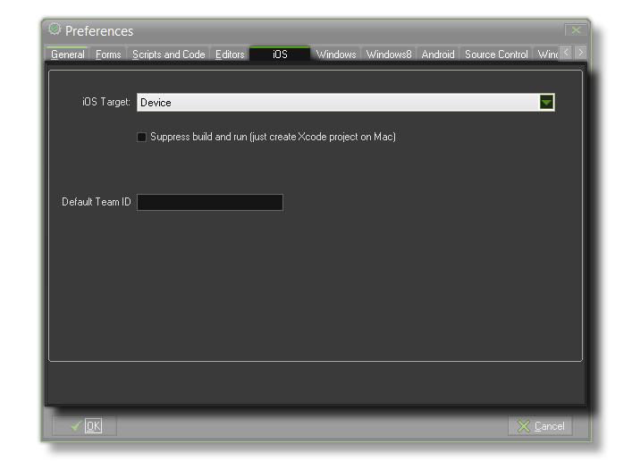

 From this tab you can set the xCode build target for iOS games to be either a device or the iOS Device Simulator. This is done by clicking the initial input box and selecting the appropriate device/simulator to use.
Under that you have the option "Suppress Build and run". This option is for those users who have a Mac running macOS Sierra or above. With macOS, you need to suppress the default build action from GameMaker: Studio, and instead simply send the app archive to Xcode and then build and run it yourself from the Xcode UI.
Finally, you can supply a default Team Identifier for all future
iOS apps that you make with GameMaker: Studio. This will be used to
have Xcode automatically sign your apps with the correct profile
and certificate, and you can find the Team Identifier from here (you must be signed in to your Apple
Developer Account). As with the above option for suppressing
builds, this is only applicable to macOS Sierra and above.
This default identifier will be used to populate the iOS Global Game
Settings, but can be over-ridden on the Provisioning sectio0n
of the Global Game Settings if required.